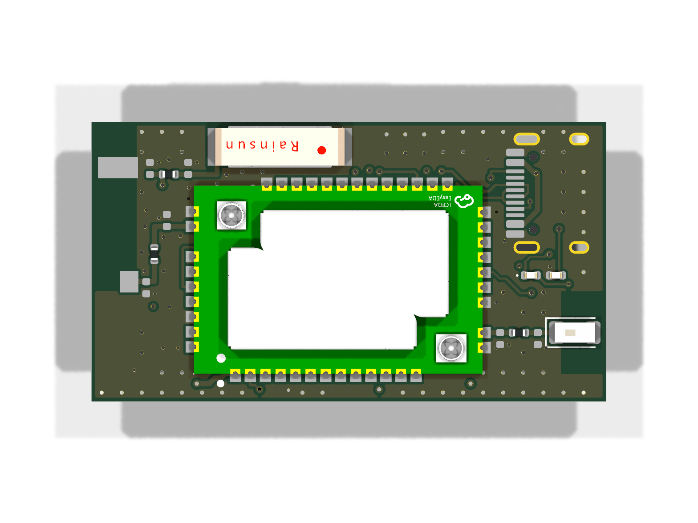
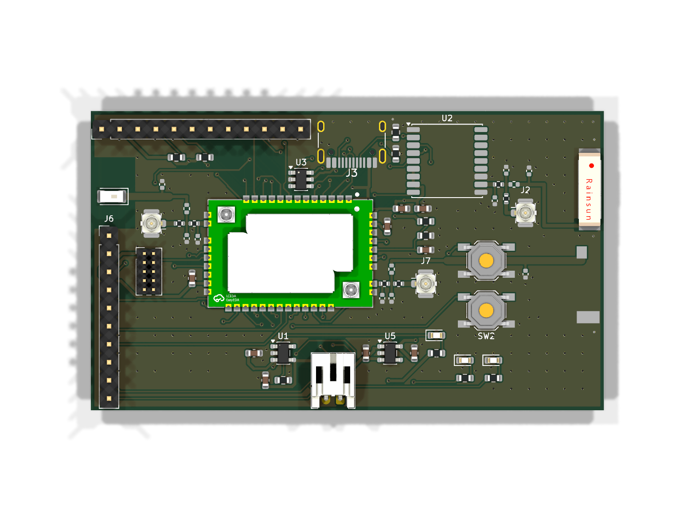

Tree-planting crew tools
2026-11-14 · Early development
A full write-up of this project is coming later. For now, this is an early look at a mesh network application that brings digital organization to tree planting, using an iOS app and RAK4631 boards.
Boards so far
Planter board

RAK4631 breakout
